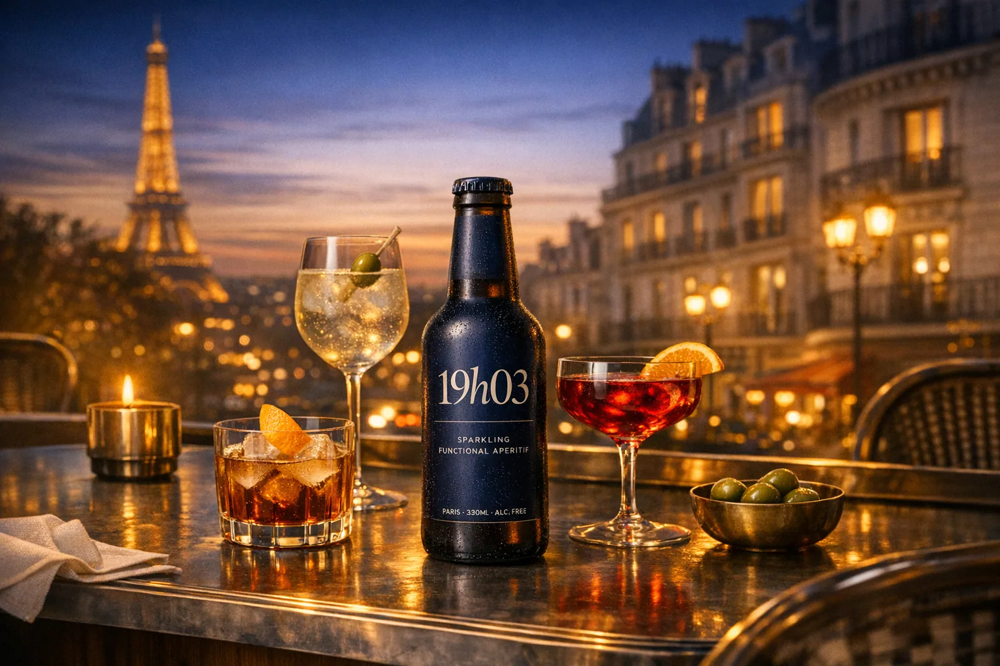
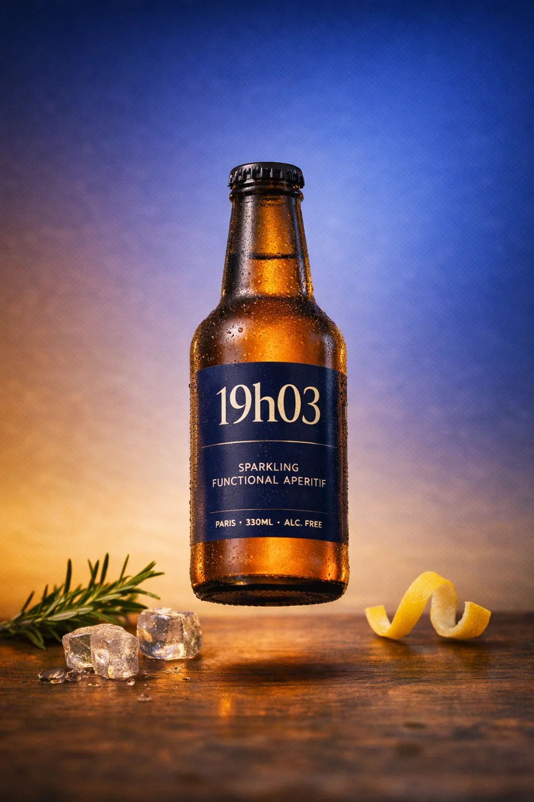
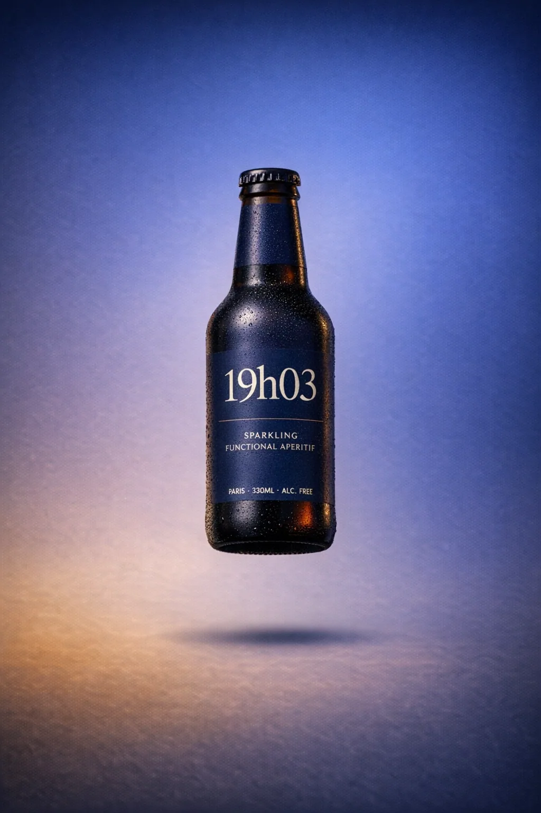
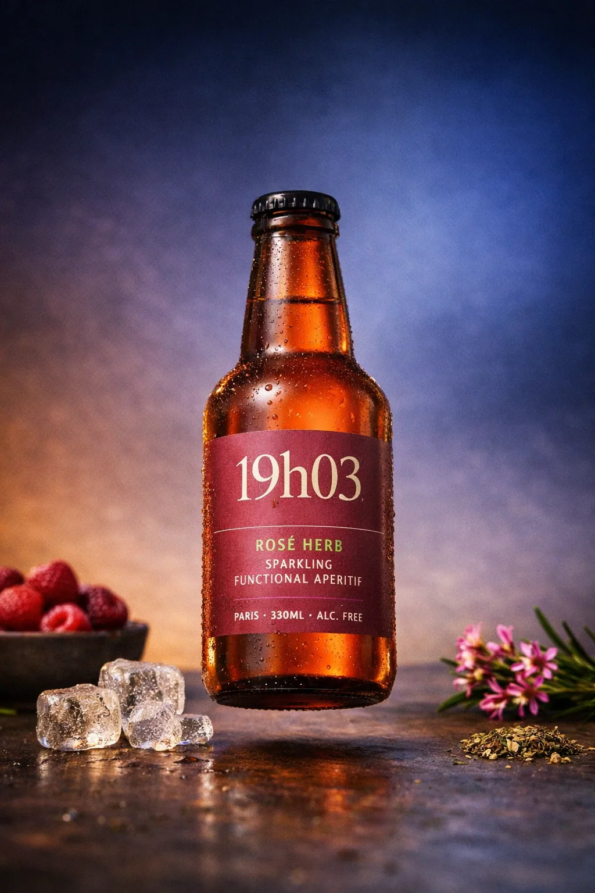
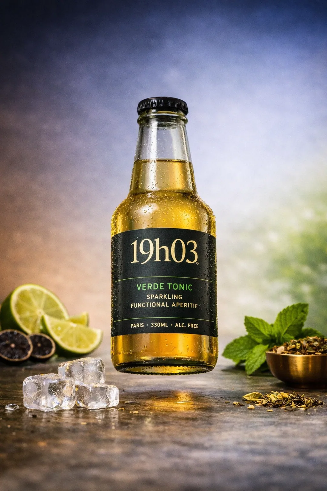

The evening needed a ritual, not another wellness drink.
Brand creation / ritual design / Paris-born concept
The first drink of the evening
is not about alcohol.
19h03 turned a social transition into a product system: a functional sparkling aperitif built around calm clarity, composed sociability, and the exact minute the day loosens its grip.
The first drink signals arrival before it signals flavor.
Observation
Evening starts as ritual, not ingredient need.
System
19h03
Category
Functional sparkling aperitif

01
Observation
The first drink marks a shift in identity before it satisfies a category need.
What mattered was not simply “non-alcoholic choice.” The real signal was the ritual of arrival: the first few minutes after work when the body softens, the group reforms, and the evening begins.
Margin note
The useful question was not what people drink instead of alcohol. It was what helps them arrive in the evening differently.

02
Tension
Wellness drinks solve the wrong problem for the evening.
Most functional beverages speak to daytime optimization, while most evening drinks still rely on alcohol to signal release. The gap sits between them: a product for transition, not substitution.
Why this mattered
Substitution is a weaker idea than occasion ownership. Ritual gives the category emotional gravity.
What existed
Generic sober-social language, soda-adjacent cues, wellness without ritual.
What was missing
An elegant first drink for people who want presence without intoxication.
03
System
19h03 built a product around a moment, not just a formulation.
The brand became a Paris-born functional sparkling aperitif for globally minded urban adults. Its system fused occasion, benefit, and cultural code into one clear answer.
System sentence
The product owned a minute in the day, not just a space on the shelf.
The first drink of the evening, precisely owned.
Calm clarity and composed sociability rather than buzz or sedation.
Parisian apero logic translated into a globally scalable brand system.

04
World
The brand world treated evening as atmosphere, not decoration.
Dusk gradients, brass accents, terrace cues, adult flavor signals, and a quiet verbal tone made the system feel socially legitimate rather than compensatory.


05
Outcome
What this proves.
This project shows how a cultural observation can become a coherent brand: from unmet need, to occasion-led positioning, to visual and verbal codes that feel fully inhabited.
An unmet need defined by transition rather than substitution.
Benefit, codes, and ritual working together as one system.
A complete answer that feels socially credible and emotionally precise.